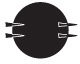
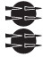
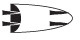
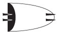
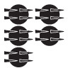
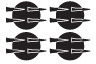
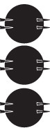
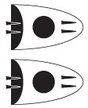

Hand-coding¶
While search is convenient in many cases, sometimes it gets tricky when you need that extra bit of control. That’s the moment to revert back to hand-coding, while not altogether forgetting template search.
As an example, we program a tablet calculator.
%load_ext autoreload
%autoreload 2
import sys, os
import collections
from IPython.display import display, Markdown
from tf.app import use
A = use('uruk:clone', checkout="clone", hoist=globals())
# A = use('uruk', hoist=globals())
Data: URUK, Character table, Feature docs
Features:
Numerals¶
There are several numeric systems in cuneiform. One of them involve the so-called ShinPP numerals. They form a set of glyphs with these numerical meanings:
shinPP = dict(
N41=0.2,
N04=1,
N19=6,
N46=60,
N36=180,
N49=1800,
)
shinPPPat = '|'.join(shinPP)
Now we want to find all the ShinPP numerals. We make use of the fact that we can construct our template.
query = f'''
tablet
sign grapheme={shinPPPat}
'''
results = A.search(query)
A.table(results, end=20, showGraphics=True)
0.12s 1018 results
| n | p | tablet | sign |
|---|---|---|---|
| 1 | P448701 obverse:1:1 | P448701 | 1(N46)  |
| 2 | P448701 obverse:1:1 | P448701 | 2(N19)  |
| 3 | P448701 obverse:1:1 | P448701 | 4(N41) .jpg) |
| 4 | P006005 obverse:2:1 | P006005 | 1(N04)  |
| 5 | P002329 obverse:1:5 | P002329 | 2(N19) |
| 6 | P002342 obverse:3:2 | P002342 | 1(N36)  |
| 7 | P002342 obverse:3:2 | P002342 | 2(N19) |
| 8 | P002344 obverse:3:3 | P002344 | 1(N04) |
| 9 | P002398 obverse:2:3 | P002398 | 1(N04) |
| 10 | P002622 obverse:1:1 | P002622 | 5(N19)  |
| 11 | P002622 obverse:2:1 | P002622 | 1(N46) |
| 12 | P002622 obverse:2:1 | P002622 | 4(N19)  |
| 13 | P002626 obverse:1:2 | P002626 | 1(N41) |
| 14 | P003330 reverse:1:1 | P003330 | 3(N46)  |
| 15 | P003330 reverse:1:1 | P003330 | 2(N49)  |
| 16 | P003330 reverse:1:1 | P003330 | 5(N19) |
| 17 | P003330 reverse:1:1 | P003330 | 2(N04) .jpg) |
| 18 | P003330 reverse:1:1 | P003330 | 1(N41) |
| 19 | P003357 obverse:1:2 | P003357 | 1(N04) |
| 20 | P003542 obverse:2:5 | P003542 | 1(N04) |
Let’s see a few tablets in more detail:
A.show(results, end=5, queryFeatures=False)
result 1


result 2
result 3
result 4

result 5


.jpg)


A tablet calculator¶
Rather than displaying search results, you can also process them in your program.
Search results come as tuples of nodes that correspond directly to the elements of your search template.
We query for shinPP numerals on the faces of tablets.
The result of the query is a list of tuples (t, f, s) consisting of
a tablet node, a face node and a node for a sign of a shinPP numeral.
Rationale¶
This task will require a higher level of programming skills and a deeper knowledge of how Python works. We include it in this tutorial to get the message across that Text-Fabric is not a black box that shields you from your data. Everything you handle in Text-Fabric is open to further programming and processing of your own design and choosing.
Data collection¶
query = f'''
tablet
face
sign type=numeral grapheme={shinPPPat}
'''
results = A.search(query)
0.12s 1018 results
We are going to put all these numerals in buckets: for each face on each tablet a separate bucket.
numerals = {}
pNums = {}
for (tablet, face, sign) in results:
pNums[F.catalogId.v(tablet)] = tablet
numerals.setdefault(tablet, {}).setdefault(face, []).append(sign)
print(f'{len(pNums)} tablets')
print('\n'.join(list(pNums)[0:10]))
print('...')
235 tablets
P448701
P006005
P002329
P002342
P002344
P002398
P002622
P002626
P003330
P003357
...
The calculator¶
We define a function that given a tablet, adds the shinPP numerals by its faces. We also show the line art and a pretty transcription.
The function is a bit involved.
# we generate Markdown strings and send them to the notebook formatter
def dm(x): display(Markdown(x))
def calcTablet(pNum): # pNum identifies the tablet in question
# show a horizontal line in Markdown
dm('---\n')
tablet = pNums.get(pNum, None) # look up the node for this p-number
if tablet is None:
dm(f'**no results for {pNum}**')
return # if not found the tablet has no ShinPP numerals: quit
A.lineart(tablet, withCaption="top", width="200") # show lineart
faces = numerals[tablet] # get the buckets for the faces
mySigns = []
for (face, signs) in faces.items(): # work per face
mySigns.extend(signs)
dm(f'*{F.type.v(face)}*') # show the name of the face
distinctSigns = {} # collect the distinct numerals
for s in signs:
distinctSigns.setdefault(A.atfFromSign(s), []).append(s)
A.lineart(distinctSigns) # display the list of signs
total = 0 # start adding up
for (signAtf, signs) in distinctSigns.items():
value = 0
for s in signs:
value += F.repeat.v(s) * shinPP[F.grapheme.v(s)]
total += value
amount = len(signs) # we report our calculation
shinPPval = shinPP[F.grapheme.v(signs[0])]
repeat = F.repeat.v(signs[0])
print(f'{amount} x {signAtf} = {amount} x {repeat} x {shinPPval} = {value}')
dm(f'**total** = **{total}**')
A.prettyTuple([tablet] + mySigns, 1, queryFeatures=False) # show pretty transcription
Calculate once¶
calcTablet('P006377')
obverse
1 x 1(N46) = 1 x 1 x 60 = 60
1 x 5(N19) = 1 x 5 x 6 = 30
4 x 3(N04) = 4 x 3 x 1 = 12
2 x 1(N41) = 2 x 1 x 0.2 = 0.4
8 x 1(N19) = 8 x 1 x 6 = 48
2 x 3(N19) = 2 x 3 x 6 = 36
5 x 1(N04) = 5 x 1 x 1 = 5
3 x 2(N04) = 3 x 2 x 1 = 6
3 x 2(N19) = 3 x 2 x 6 = 36
1 x 2(N41) = 1 x 2 x 0.2 = 0.4
2 x 4(N04) = 2 x 4 x 1 = 8
1 x 3(N41) = 1 x 3 x 0.2 = 0.6000000000000001
1 x 4(N19) = 1 x 4 x 6 = 24
total = 266.4
reverse
.jpg)
1 x 1(N36) = 1 x 1 x 180 = 180
1 x 1(N46) = 1 x 1 x 60 = 60
1 x 8(N19) = 1 x 8 x 6 = 48
1 x 5(N04) = 1 x 5 x 1 = 5
1 x 3(N41) = 1 x 3 x 0.2 = 0.6000000000000001
total = 293.6
result 1

.jpg)
.jpg)


.jpg)


.jpg)
.jpg)


Calculate ad lib¶
Now the first 5 tablets.
for tablet in sorted(pNums)[0:5]:
calcTablet(tablet)
obverse
1 x 1(N04) = 1 x 1 x 1 = 1
total = 1
result 1
.jpg)

.jpg)


obverse
2 x 1(N36) = 2 x 1 x 180 = 360
total = 360
reverse
1 x 3(N36) = 1 x 3 x 180 = 540
total = 540
result 1

obverse
1 x 5(N36) = 1 x 5 x 180 = 900
4 x 1(N46) = 4 x 1 x 60 = 240
2 x 1(N36) = 2 x 1 x 180 = 360
1 x 2(N46) = 1 x 2 x 60 = 120
1 x 1(N04) = 1 x 1 x 1 = 1
1 x 1(N19) = 1 x 1 x 6 = 6
2 x 2(N36) = 2 x 2 x 180 = 720
1 x 2(N19) = 1 x 2 x 6 = 12
total = 2359
result 1
.jpg)

obverse
1 x 1(N04) = 1 x 1 x 1 = 1
total = 1
result 1


.jpg)
.jpg)
.jpg)


obverse
1 x 1(N36) = 1 x 1 x 180 = 180
total = 180
result 1
.jpg)
More …¶
The capabilities of search are endless. Often it is the quickest way to focus on a phenomenon, quicker than hand coding all the logic to retrieve your patterns.
That said, it is not a matter of either-or. You can use coding to craft your templates, and you can use coding to process your results.
It’s an explosive mix. A later chapter in this tutorial shows even more cases.
Have another look at the manual.